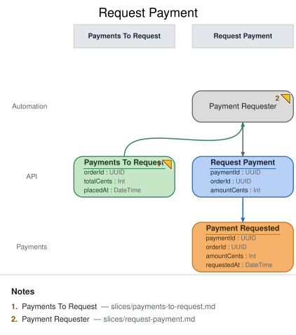

Request Payment
Automation · implemented
{kind=link}
| Kind | Name | Detail |
|---|---|---|
| processor | Payment Requester | from Payments To Request |
| command | Request Payment | { paymentId: UUID, orderId: UUID, amountCents: Int, requestedAt: DateTime } |
| event | Payment Requested | @Payments · { paymentId: UUID, orderId: UUID, amountCents: Int, requestedAt: DateTime } |
Slice: Request Payment

Intent
Once an order exists, Meridian Goods must ask the payment provider to collect funds for it —
without a human triggering that call, and without ever asking twice for the same order. This
slice is the automation half of that flow: it watches the Payments To Request to-do list and
turns each entry into exactly one outgoing payment request.
Trigger & Actor
Internally triggered. The Payment Requester processor watches the Payments To Request view
(built in the slice before, from Order Placed) and, for each order it finds there, issues the
Request Payment command. The processor never records Payment Requested itself — the command it
triggers does.
Command / Input
Command: Request Payment
| Field | Type | Required | Rules / Validation |
|---|---|---|---|
| paymentId | UUID | yes | Minted by the processor when it decides to act — the idempotency key for this payment attempt; stable across retries of the same decision. |
| orderId | UUID | yes | Must name an order present in Payments To Request at the time the processor acts. |
| amountCents | Int | yes | Must equal the totalCents carried on that order's Payments To Request entry (INV-RP-2) — the processor never invents or adjusts the amount. |
| requestedAt | DateTime | yes | Stamped by the processor at decision time — the automation is the command's author, so it supplies the request time (see domain-decisions.md, timestamp-origin convention). |
Trigger
Triggered by: processor Payment Requester, also in this slice.
Event(s) Emitted
Event: Payment Requested → context Payments
Read by: Payments To Request (removed — INV-PTR-2, slices/payments-to-request.md) and
Order Status (the customer-facing view, in the Order Status slice).
| Field | Type | Immutable Fact? | Source / Notes |
|---|---|---|---|
| paymentId | UUID | yes | Request Payment.paymentId |
| orderId | UUID | yes | Request Payment.orderId |
| amountCents | Int | yes | Request Payment.amountCents |
| requestedAt | DateTime | yes | Stamped by the issuing automation: Payment Requester is the command's author, so it legitimately supplies the request time on Request Payment.requestedAt — carried on both command and event (see domain-decisions.md, timestamp-origin convention). |
Invariants / Business Rules
- INV-RP-1 (exactly-once liveness): At most one
Payment Requestedevent is ever recorded perorderId. The processor's decision to act is driven by an order's presence inPayments To Request— oncePayment Requestedlands,INV-PTR-2removes the order from that queue, so the processor structurally cannot re-select it on a later poll. Idempotency is enforced on the read side (the to-do list draining), not by deduplicating onpaymentIdat write time — the command'spaymentIdis the processor's own idempotency key for retrying its own in-flight attempt, not a dedupe key across separate decisions. - INV-RP-2 (amount fidelity):
Request Payment.amountCentsmust equal the order's owntotalCentsas carried on itsPayments To Requestentry — traced back toOrder Placed. The processor is a pure conduit for this value; it never recomputes, discounts, or rounds it. - INV-RP-3 (no direct recording): The payment processor/provider integration never records
Payment Requested(or any event) directly. Every outbound request funnels through theRequest Paymentcommand, so the same validation and idempotency guarantees apply whether the request was triggered by the normal automation path or replayed for recovery. There is no back-door write path from the provider-facing code straight into the event stream.
Scenarios (Given / When / Then)
- Happy path — Given order
O1(totalCents5000) is present inPayments To Request, When thePayment Requesterprocessor selects it and issuesRequest Payment(orderIdO1, amountCents5000), ThenPayment Requestedis recorded forO1andO1is removed fromPayments To Request. - Exactly-once under re-poll (INV-RP-1) — Given
O1has already produced aPayment Requestedevent (and so is no longer inPayments To Request), When the processor's next poll runs over the queue, ThenO1is not present to select and no secondRequest Paymentcommand is issued for it. - Amount fidelity (INV-RP-2) — Given
O1'sPayments To Requestentry carries totalCents5000, When the processor issuesRequest PaymentforO1, ThenamountCentson that command (and the resulting event) is5000— never a different value. - No back-door writes (INV-RP-3) — Given the payment provider integration code path, When it
needs to reflect that a request went out, Then it does so only by having already gone through
Request Payment— there is no code path that appendsPayment Requestedwithout that command having run first.
Alternate & Error Flows
- Processor crash mid-cycle: if the processor crashes after issuing
Request Paymentbut before its own bookkeeping completes, the next run must not re-issue the command for the same order — covered by INV-RP-1, since the order is already absent fromPayments To Requestonce the event lands. - Idempotent command retry: if the same in-flight
Request Payment(samepaymentId) is retried due to a transport-level timeout, the command handler treats a repeat of an already- recordedpaymentIdas a no-op rather than a second event — this is the processor's own retry-safety, distinct from INV-RP-1's cross-decision exactly-once guarantee. - Provider call failure: a downstream failure to actually reach the payment provider is an
implementation concern of the command handler (retry/backoff), not modeled as a rejection here —
Request Paymentrecords the request being made, not the provider's acknowledgment of it.
Non-Functional Requirements
- Security / authz: none beyond internal system trust — this command is issued only by the
Payment Requesterprocessor, never by an external caller orui. - PII & compliance: none beyond the order total already carried by
Payments To Request; no card/account data flows through this command (payment method details are the provider integration's concern, not this model's). - Performance / SLA: the automation's poll/reaction latency bounds how quickly an order moves
from "placed" to "payment requested" — no hard SLA modeled here, but this is the responsiveness
budget referenced by
slices/payments-to-request.md's freshness note.
Dependencies & Read Models Affected
- Upstream events this slice relies on: none directly — it reacts to the
Payments To Requestview, not toOrder Placeditself. - Downstream read models / slices affected:
Payments To Request(drains via INV-PTR-2),Order Status(customer-facing, readsPayment Requested).
Open Questions
- Should the automation batch multiple due orders into one provider call? Resolved: no — one
Request Paymentcommand per order, matching this slice's one-command-per-decision shape; batching (if ever needed) would be a provider-integration optimization behind the same command. - What happens if the provider rejects the request outright (not just fails to respond)?
Resolved: out of scope for this model revision — this model only carries a success event
(
Payment Captured, viaRecord Payment Result) for the provider's response; a decline/reject outcome would need its own event and is left as a known future extension, not fabricated here.